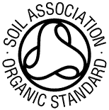

За БИО продуктите
Биохраните се произвеждат в съответствие с определени стандарти за производство. През по-голямата част от човешката история селското стопанство може да бъде описано като биологично. Едва през 20 век започва голямото предлагане на нови синтетични химикали, които впоследствие се въвеждат в производството на хранителни продукти. Този по-нов маниер на производство е наричан "конвенционален", макар че биологичното производство е било конвенционално за много по-дълъг период от време.
При биологичното производство използването на конвенционални небиологични пестициди, инсектициди и хербициди е силно ограничено и се прилага в краен случай.
В биохраните не трябва да има радиоактивни и канцерогенни елементи, което налага използване на незамърсени почви и води за тяхното производство. Животните трябва да са отгледани без обичайната употреба на антибиотици и хормони на растеж и да бъдат хранени със здравословни биохрани.
Сертифициране
BDIH, Германия
Стандарти:
- Минимум 95% от всички ингредиенти в състава са длъжни да бъдат органични.
- В състава на продукцията не трябва да присъстват силикони, парафини, минерални масла, изкуствени оцветители, ароматизатори, ГМО.
- Забранено е използването на суровини с животински произход (например масло от норка, мазнини от мармот, мазнини от други животни, както и животински колаген).
- В качеството на консерванти е разрешено да се използват само консерванти с природен произход.
- Не бива да се използва опаковка за съхранение на продукта, която съдържа PVC и други халогенирани полимери.
- Не се допуска провеждане на опити с животни при тестването на суровините.
NaTrue, Белгия
Сертификацията е изградена на три нива: сертифицирана натурална козметика, сертифицирана натурална козметика с най-малко 70% биологични съставки и сертифицирана биологична козметика – най-малко 95% био съставки.
Основните изисквания:
- Забранено е използването на вредни или съмнителни химически вещества, а също продукти от нефтопреработка, аромати, консерванти, оцветители, ароматизатори, силикони, полимери.
- Забранено е използването на вещества, получени от генно-модифицирани организми и радиоактивни вещества.
- Да не са тествани върху животни.
- Съставът да бъде от серифицирани природни растителни компоненти.
- Опаковката да бъде от биоразградими материали.
Soil Association, Англия

Основните изисквания:
- Производителите са длъжни преимуществено да използват компоненти с растителен произход.
- Суровините трябва да бъдат свежи и преработката им трябва да се осъществява по механични, максимално щадящи методи без използването на вредни химически вещества.
- Забранено е използването на изкуствени оцветители, ароматизатори, продукти от нефтопреработка, силикони, полимери, ГМО и продукти, получени от мъртви гръбначни животни. Изключение правят ингредиенти, които се добиват без насилие над животните и имат органично сертифициране.
- Всички вещества се проверяват за отсъствие на токсичност и биоразграждане.
- Забранено е тестването на продуктите над животни.
- Процесът на производство и опаковъчните материали трябва да съответстват на екологичните норми.
- Производителите се ангажират да правят всичко възможно за защита на природните богатства на планетата и предотвратяване на замърсяването на околната среда при всички етапи на производство.
back on top